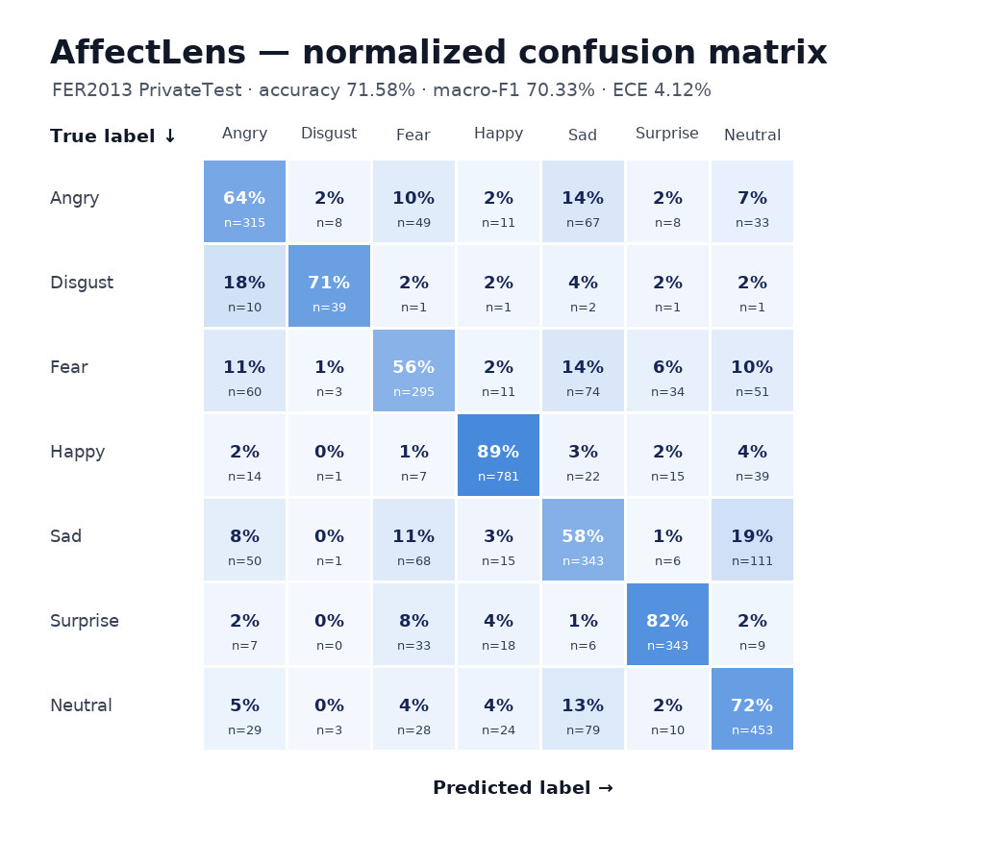

Machine learning机器学习
AffectLensAffectLens · 表情识别
Facial expression recognition with a sense of uncertainty.让表情识别理解自身的不确定性。
71.58%v2 test accuracyv2 测试准确率

01 / THE QUESTION问题
What needed to work?需要解决什么？
A confident prediction is not necessarily a reliable one. Expression datasets contain noisy labels and uneven class distributions, while camera inputs vary in lighting, size and blur.高置信度不一定意味着可靠。表情数据存在标签噪声与类别不均衡，摄像头输入也受到光照、人脸尺寸和模糊程度影响。
02 / THE PROCESS方法
How it comes together.如何将它实现。
- Train an ImageNet-pretrained ResNet-18 with FER+ vote blending, class-balanced focal loss and image augmentation.使用 ImageNet 预训练 ResNet-18，结合 FER+ 投票标签、类别平衡 focal loss 与图像增强进行训练。
- Fit temperature scaling on the validation split. Combine image quality and prediction confidence to abstain on unreliable inputs.在验证集上进行温度缩放，将画面质量与模型置信度结合，对不可靠输入返回“不确定”。
- Connect expression probabilities and valence/arousal estimates to a real-time dashboard, temporal smoothing and Grad-CAM explanations.将表情概率、效价与唤醒度估计接入实时面板，并加入时间平滑和 Grad-CAM 可解释性展示。
03 / THE OUTCOME成果
What the work shows.项目所呈现的结果。
The recorded balanced ResNet-18 v2 experiment achieved 71.58% accuracy and 70.33% macro-F1 on 3,589 FER2013 PrivateTest images. These figures describe that saved experiment, not every later checkpoint or real-world camera condition.已保存的平衡 ResNet-18 v2 实验在 FER2013 PrivateTest 的 3,589 张图片上取得 71.58% 准确率与 70.33% macro-F1。这些指标对应该次实验，不代表所有后续权重或真实摄像头场景。
